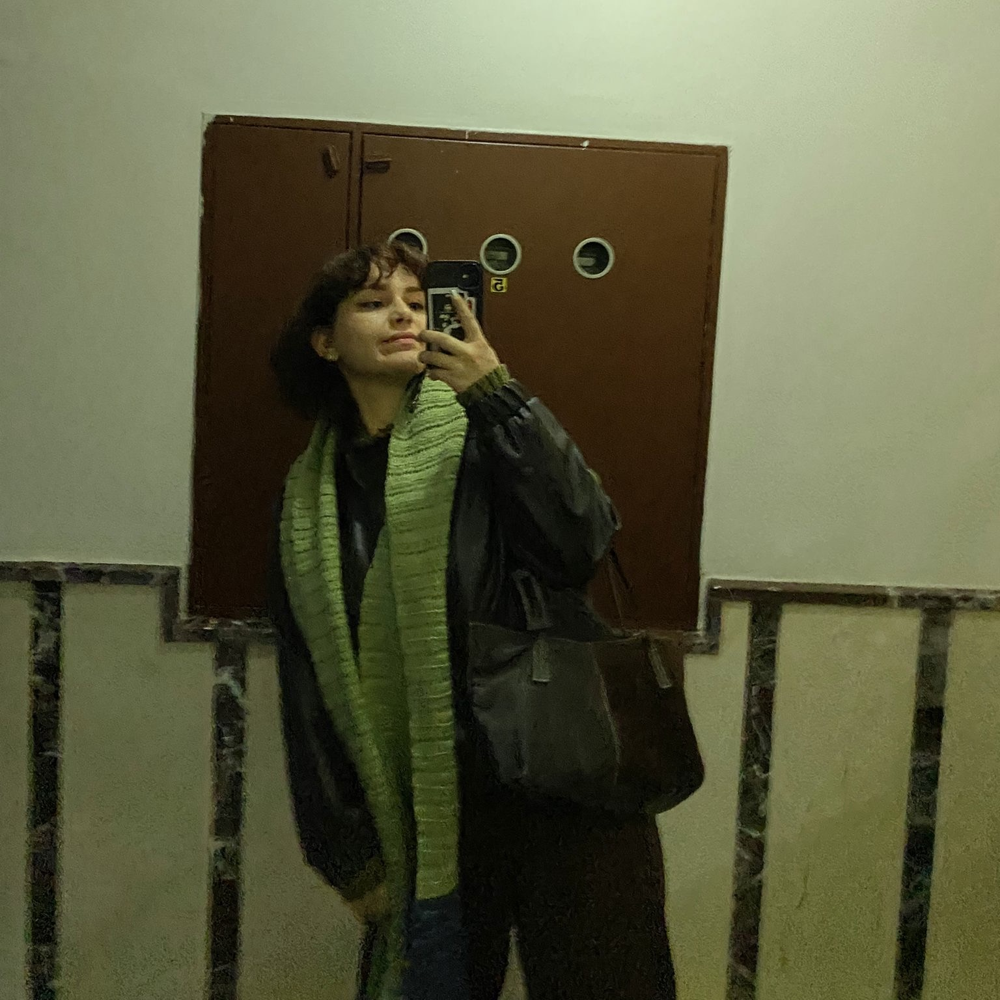

2024-01-24
This post is about a girl named 'Özlem'. I am going to review her as a person and I am going to try to be not biased. Let's start.
Özlem is a 20 year old Turkish student. She studies chemistry education at the Middle East Technical University.
Özlem is a deeply creative person, she has to express her life through creative work. Like journaling, photographing or vloging. While her work shows that lacks experience, she more than makes up for it with her creativeness and attention to detail.
She started her creative life with journaling, while it began as writing diaries; it soon became much more. The pages of her notebooks became her canvas and she started painting it. Her way of journaling is a mixed discipline, she writes her thoughts, she uses her journal to track life progression and even uses it as a scrapbook.
This method has a lot of benefits; it let's her re-experience good memories, plan her future and review her past. I can clearly say that this might be one of her best qualities.
Then comes photography, while she started taking photos with a digital camera. She soon realized that digital is not her style. The natural tone and the warm feeling of nostalgia made her choose analog photography. The way she shoots analog is quite different from others. She tries to capture the moment, not the silent stillness. Even though she prefers to shoot monochrome, you can still see the warmness.
And her last creative endeavor is youtube, she likes to shoot her daily life. She deems things worthy to be preserved and tries her best to capture it. While she hasn't made tons of videos, she has a giant list of ideas that she wants to shoot.
Even though she likes to produce, she also likes to consume. The thing she likes to consume the most is movies, especially art house movies. She likes to watch different lives that she has never seen and she likes to see how stories can be approach differently. I think the reason why she is so good at creating such good works is her film repertoire. Because she saw how you can approach subjects so differently in films, she knows that you can approach life the same way.
I want to talk about three things in this section: Firstly her curiosity, secondly her open-mindedness and lastly how she sees the best of people.
She is a naturally curios person, she always wants to know more and she always questions the things she knows. This side of her is how even though she was raised in a place that were away from the science and filled with lies, she was still able to grow to the person she is today. To sum up, the reason why she is so cultured and sophisticated is her curiosity.
Her open-mindedness is also a stepping stone for who she is today. While learning new ideas she is open to changing her old ideas. This is not something common. Most people try to defend their tradition and as a result doesn't listen to new opinions. Because she is such a open-minded person, she was able to throw away her horse glasses and try new things without the fear of changing her ways.
She always tries to look at people with good intentions. She knows that human beings are flawed and can make mistakes. She can easily forgive and make peace with people. But this does not mean that she lets other control her. While being forgiving she isn't afraid to let people go out of her life if they cross the line.
Özlem is clearly an individual that looks at the world through a clear lens. You can see this when you look at how she carries herself, what she believes in and how she treats other. That's why she is surrendered by so many different person and thats why those people love her.